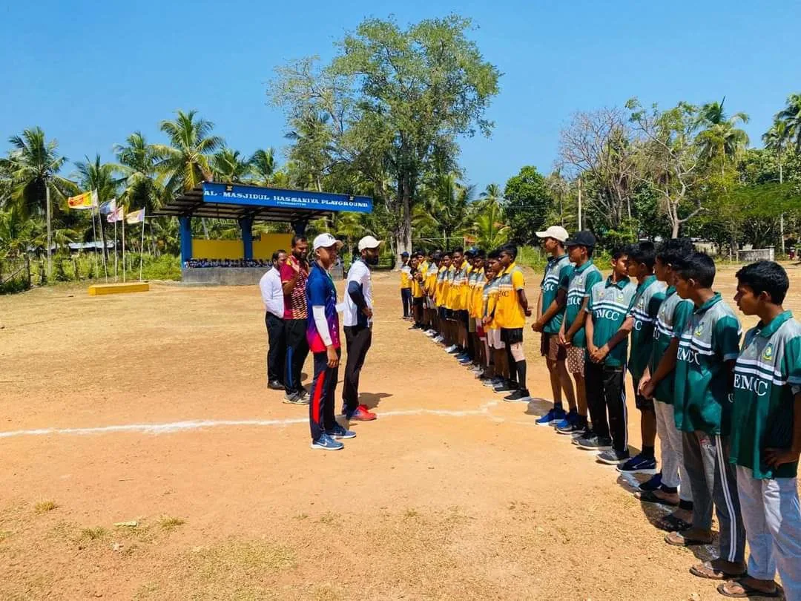
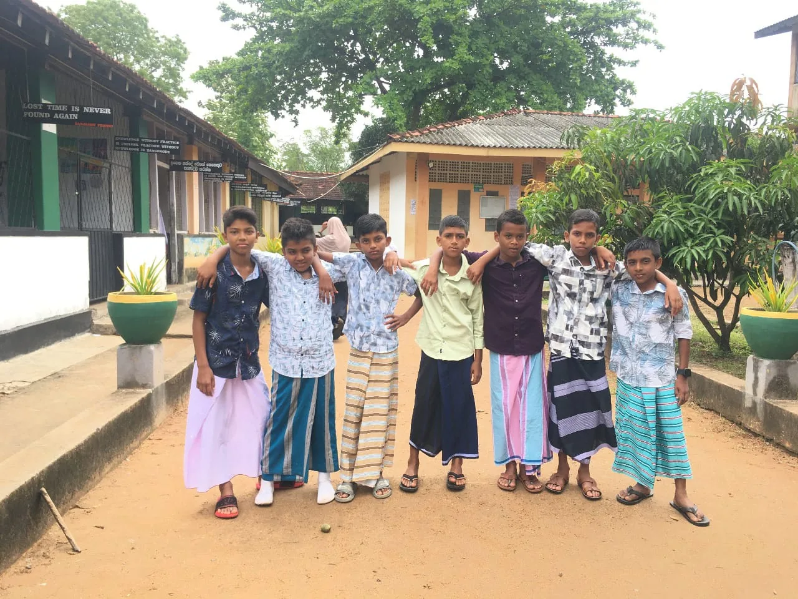
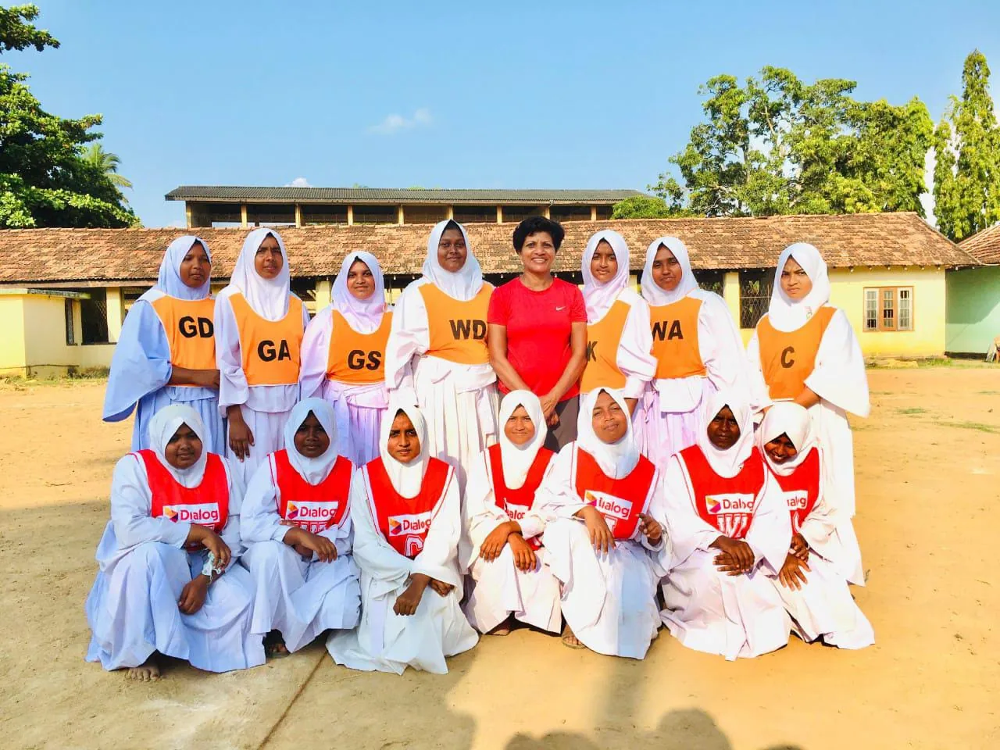
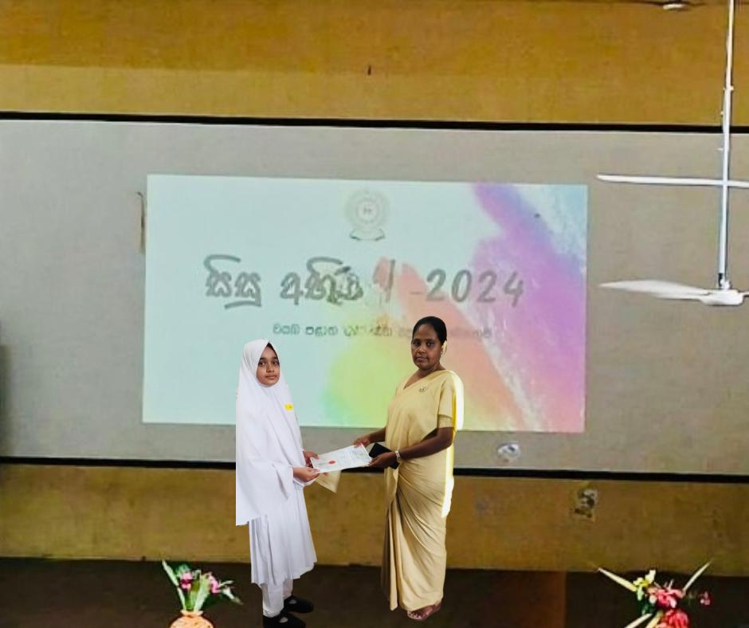
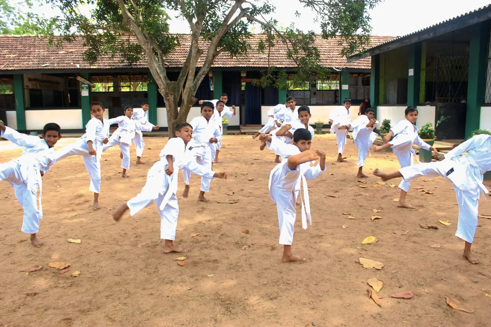
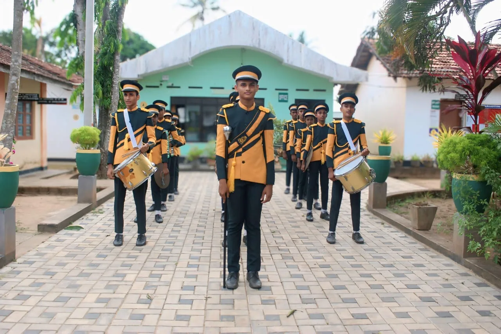

Explore moments from EMCC sporting activities and student participation.

SPORTS DAY
Participation and teamwork

STUDENT ACTIVITIES
Discipline and teamwork

SCHOOL COMMUNITY
Learning beyond the classroom

FIELD ACTIVITIES
Active school life

TEAM SPIRIT
Together as one team

STUDENT RECOGNITION
Celebrating participation

MARTIAL ARTS
Practice, focus and confidence

TEAM PHOTO
Pride in representing the school

SCHOOL SPORTS
Shared experiences

FOOTBALL
EMCC football team

STUDENT ACTIVITIES
Commitment and coordination

FOOTBALL
Teamwork on the field

FOOTBALL
Team achievement

SCHOOL SPORTS
Taking part and doing our best
 EMCCETHUNGAHAKOTUWA MUSLIM
EMCCETHUNGAHAKOTUWA MUSLIM